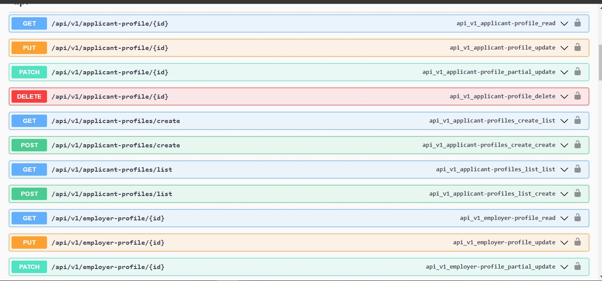
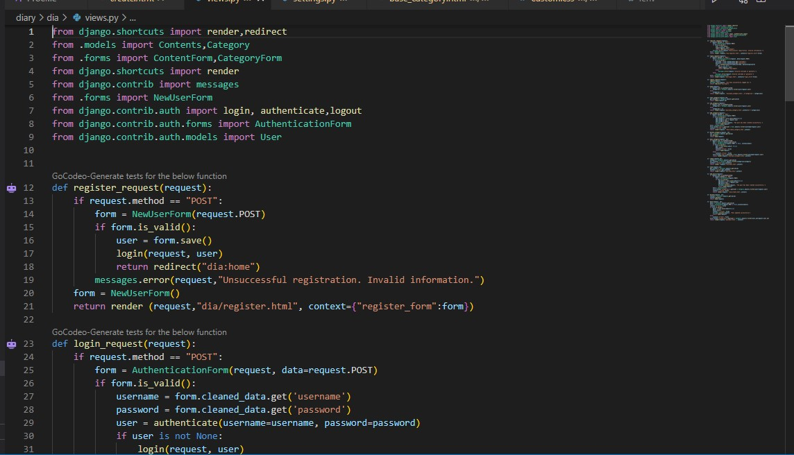
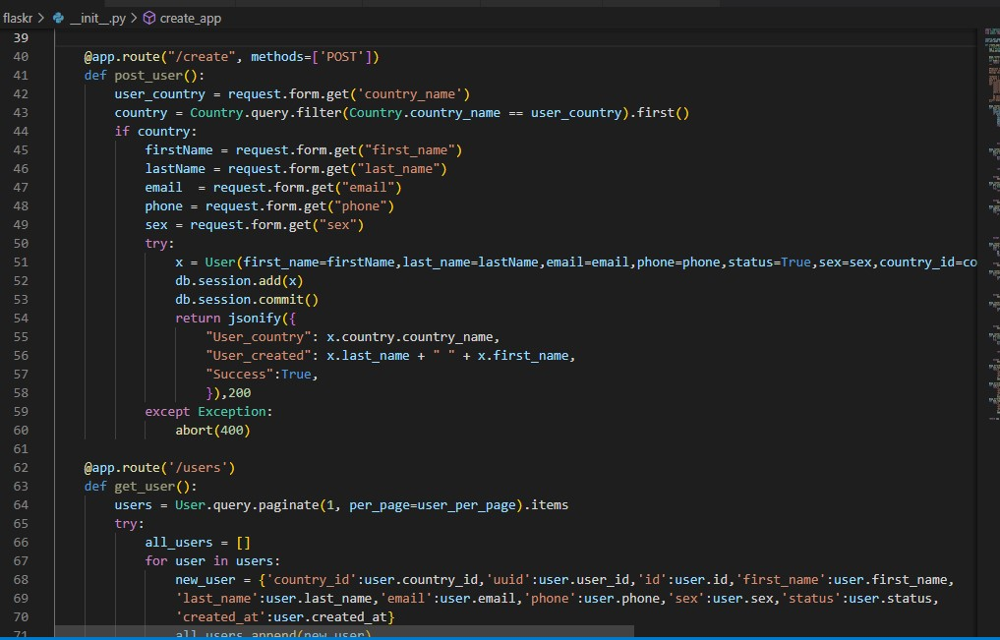

Work Experience
Software Developer Intern
Bitnine Global
Contributed to the open sourced graph extension-Apache AGE.
Wrote different technical articles highlighting the benefits of the extension..
Explored the Internals of PostgreSQL database in detail.
PostgresQl|C|Apache AGE
Lead Instructor
Feint Hub Technologies
Developed a beginner-friendly curriculum.
Established positive teacher-student relationships, which helped to identify and address individual student needs
Trained over 10 students on the basics of Python and JavaScript.
Python|JavaScript
Python Developer Intern
HNG Internship
Collaborated with a team of backend developers and diverse tech stacks to deliver the product Devask.
Led the development of two key features and created RESTful endpoints for CRUD operations
Utilized FastAPI to enhance performance and scalability.
Python|FastAPI|SQLAlchemy
My Projects
Job Board API
Designed a Job Board API where users can view an employer's profile, search for profiles as well as apply for a role
View projectPython|Django Restframework|

Diary APP
Developed a MVT web application using Django, Bootstrap, Python, HTML, and CSS.
Implemented database creation with Django models, executed complex queries which I used to manipulate data, and performed CRUD operations via API endpoints.
Utilised Bootstrap for responsive design and improved user experience. View the project Diary App.
View projectPython|Django|Html|CSS

User Management API
Designed and developed a user management API featuring a RESTful API that retrieves and stores data for users from various countries around the world.
The API allows users to activate and deactivate their profiles within the system, providing an efficient and user-friendly experience.
View projectPython|Flask|SQLAlchemy
